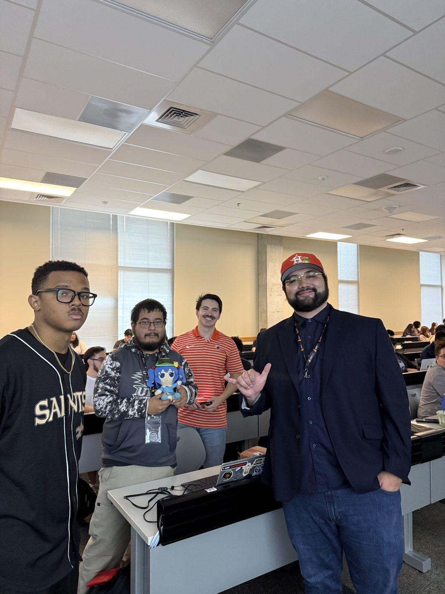
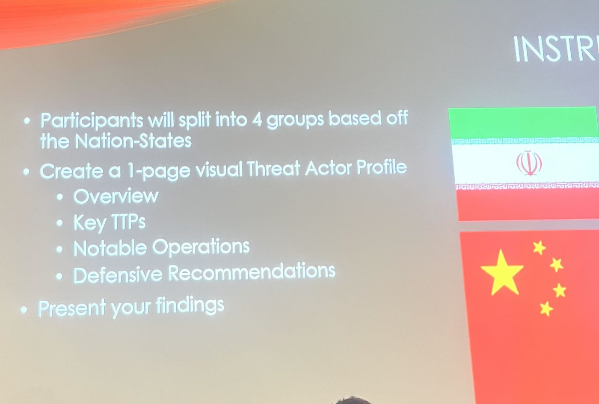

2026-08-22 | research
Cyber Warfare Report
Analysis on modern cyber warfare tactics and defense mechanisms.
- Analysis
- Defense
- Resilience
Research group
We are a research group focused heavily on cybersecurity within the context of warfare.
Our main focus is how computing systems are used by nation states to conduct warfare operations. Our trainings cover several aspects of the field, from which nations are involved, to the kinds of malware used, to what gets hit physically.
Areas the group covers:


We want students to be able to recognize the signs of an ongoing cyberattack and respond to it promptly, and to understand the risks our nation's industries and military face as cyberspace keeps changing.
Our research group specializes in hands-on training, including topics such as:
2026-08-22 | research
Analysis on modern cyber warfare tactics and defense mechanisms.